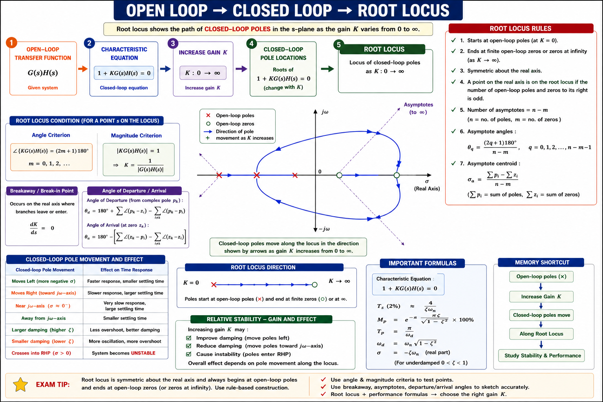
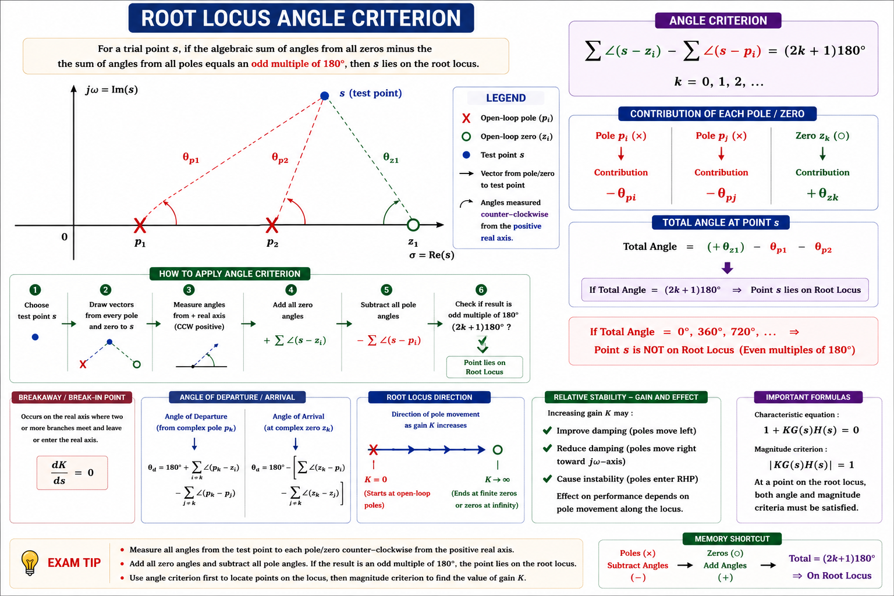
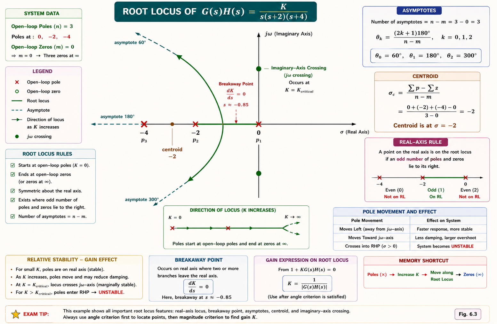
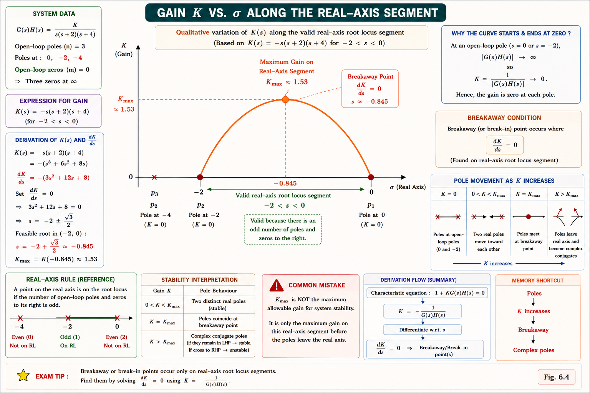
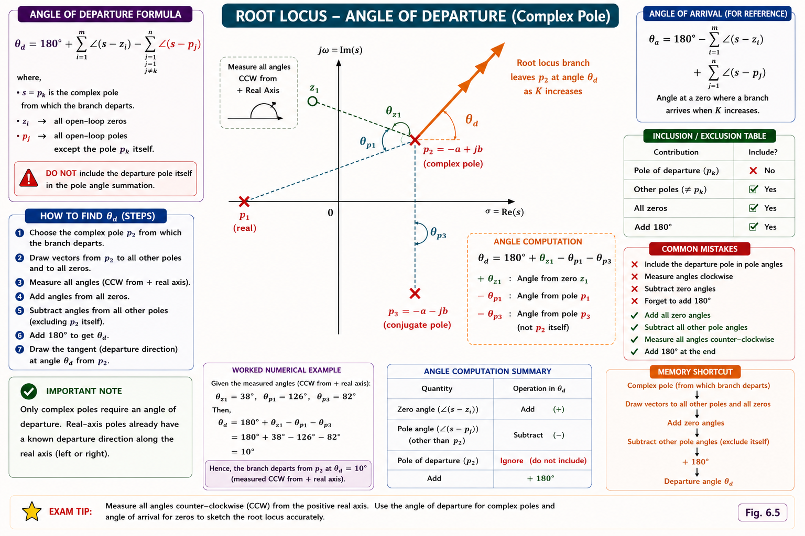
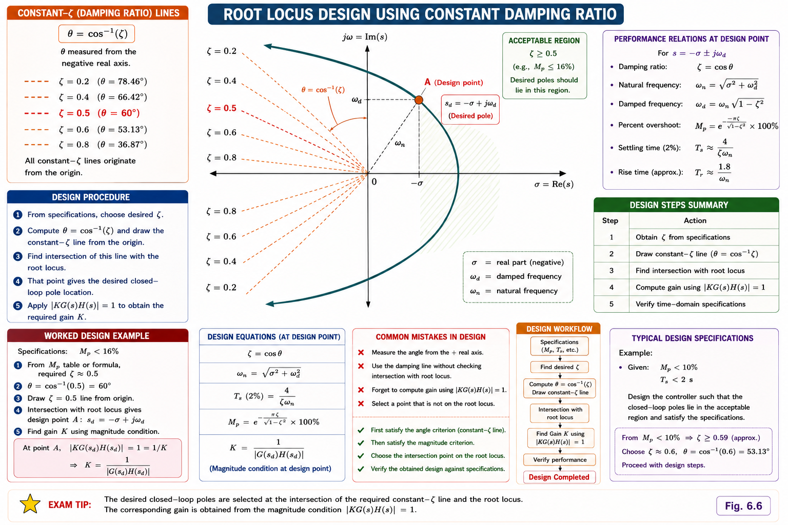

Root locus fundamentals, the angle and magnitude conditions, construction rules, breakaway and break-in points, angle of departure and arrival, stability analysis and controller design using root locus — complete GATE, IES, and PSU exam coverage with full derivations and solved examples.
A closed-loop control system's behaviour — how fast it settles, whether it oscillates, whether it is stable at all — is decided entirely by the location of its closed-loop poles in the s-plane. Routh-Hurwitz (Chapter 5) only tells you whether the system is stable for a given gain K. It does not tell you how the poles move as K is tuned from 0 to ∞, and it does not tell you which value of K gives a well-damped, fast response.
Root locus, introduced by Walter R. Evans in 1948, is a graphical method that plots the exact path traced by every closed-loop pole in the s-plane as the loop gain K varies from 0 to ∞. It converts the algebra of solving a high-order characteristic equation for many values of K into a geometric sketching problem governed by a handful of rules.
Root locus answers the designer's real question: "If I increase the gain of my amplifier or controller, will my system still be stable, and how will its speed and overshoot change?" It bridges the gap between open-loop transfer function data (which is easy to obtain from Bode plots or frequency response tests) and closed-loop pole locations (which decide transient performance and stability).

Consider a unity/non-unity feedback system with open-loop transfer function G(s)H(s) and forward gain K. The closed-loop characteristic equation is:
Since s is complex, this single complex equation splits into two real conditions that any point s on the root locus must satisfy simultaneously.
The angle condition alone decides which points in the s-plane qualify as closed-loop pole locations — this is what you sketch. The magnitude condition is only used afterward, to find the specific gain K that places the pole at a particular point already known to lie on the locus. You never need magnitude to sketch the locus itself.

Students often try to use the magnitude condition to sketch the locus. This is backwards — magnitude gives K only after a point is confirmed to satisfy the angle condition. Sketching always starts with angle condition and construction rules; magnitude is the last step, used only to size K at a chosen operating point.
Evans reduced the sketching problem to a set of rules derived directly from the angle condition. Apply them in order and the shape of the locus emerges without solving the characteristic equation for every K.
The number of root locus branches equals the number of open-loop poles, n (the higher of poles/zeros count). Each branch starts at an open-loop pole (K = 0) and ends either at an open-loop zero or at infinity (K → ∞).
Since K = 0 makes the characteristic equation reduce to the open-loop poles, every branch originates at a pole. As K → ∞, the equation is dominated by zeros, so m branches terminate on the m finite open-loop zeros, and the remaining (n − m) branches travel to infinity along asymptotes.
A point on the real axis is part of the root locus if the total number of real poles and zeros to its right is odd. This comes directly from the angle condition — real poles/zeros to the right each contribute 180°, while those to the left contribute 0°.
Points where two or more branches meet on the real axis and then separate (breakaway) or merge back in from the complex plane (break-in). Covered in full detail in §6.4.
At complex poles, branches leave at a specific angle (angle of departure); at complex zeros, branches arrive at a specific angle (angle of arrival). Covered in §6.5.
Found using the Routh-Hurwitz array (auxiliary equation from the row that would go to zero) or by substituting s = jω directly into the characteristic equation and equating real and imaginary parts to zero. This gives the marginal gain Kmar and the frequency of sustained oscillation.

| Rule | Governs | Key Formula |
|---|---|---|
| Branches | Total number of loci | = n (number of open-loop poles) |
| Start / End | K = 0 and K = ∞ points | Start at poles, end at zeros or ∞ |
| Real-axis segment | Which real-axis stretches are on locus | Odd count of poles+zeros to the right |
| Asymptotes | Behaviour as s → ∞ | θ_a = (2q+1)180°/(n−m) |
| Centroid | Asymptote intersection | σ_a = (Σp − Σz)/(n−m) |
| Breakaway/break-in | Real-axis merge/split points | dK/ds = 0 |
| Departure/arrival | Angle at complex poles/zeros | θ_d = 180° − Σθ_p + Σθ_z |
| jω crossing | Marginal stability gain | Routh array / s = jω substitution |
When two branches of the root locus approach each other along the real axis, meet, and then depart into the complex plane as a complex-conjugate pair, the meeting point is called a breakaway point. The reverse — two complex-conjugate branches returning to the real axis and then separating along it — is called a break-in point.
Between two real poles (or a pole and a zero, or two zeros), the gain K is not monotonic — it rises to a local maximum (breakaway, going pole-to-pole) or falls to a local minimum (break-in, going zero-to-zero) as s moves along that real-axis stretch. The breakaway point is exactly where dK/ds = 0, the point of maximum gain sensitivity on that segment.
From the characteristic equation 1 + K G(s)H(s) = 0, solve for K as a function of s, then differentiate and set to zero.
A breakaway point lies between two poles on a valid real-axis locus segment (gain rises then branches leave). A break-in point lies between two zeros (branches arrive from complex plane then split, gain still rising toward the zeros as K→∞). Between a pole and a zero, the real-axis segment usually has neither — K varies monotonically.
Since a breakaway point is where two real closed-loop poles coincide (a repeated root), it must simultaneously satisfy the characteristic equation and its derivative:
Eliminating K between these two equations gives the same breakaway points without explicitly writing K(s) — useful when G(s)H(s) is awkward to invert.

When the open-loop system has a pair of complex-conjugate poles or zeros, the locus does not leave or arrive along the real axis — it leaves/arrives at a specific angle governed by the angle condition applied at a point infinitesimally close to that complex pole or zero.
Here every angle θ is measured from the reference pole/zero to all other poles and zeros of the system, using the standard convention that angles are measured counter-clockwise from the positive real axis.

Angles measured counter-clockwise from the positive real axis are positive. When computing θ_d or θ_a, be consistent — draw a rough sketch first, mark every angle physically, then apply the formula. GATE questions frequently test only this angle arithmetic, not the full locus sketch.
The single biggest practical use of root locus is reading off exactly how much gain a system can tolerate before it goes unstable, and what damping / speed trade-off exists below that limit — all without re-solving the characteristic equation for each trial K.
For a desired transient response (specified overshoot / damping ratio ζ), draw a radial line from the origin at angle cos⁻¹ζ from the negative real axis. Wherever this line intersects the root locus is the closed-loop pole location that gives that ζ; the magnitude condition at that intersection point yields the required K.

A system that is stable for small K can become unstable for large K if the locus bends into the right-half plane (common with 3+ poles and no zeros). Conversely, adding a zero (as in PD or lead compensation) can pull the locus left, increasing the stable gain range — this is the basis of root-locus-based compensator design in §6.7.
Root locus is not just an analysis tool — it directly guides where to place a compensator's pole and zero so the locus passes through a desired closed-loop pole location, meeting given transient specifications (settling time, overshoot, rise time).
A zero adds a positive angle contribution (+θ_z) to the angle condition. To keep the total at (2q+1)180°, the locus bends toward the zero — generally leftward, improving stability margin and speeding up response. This is the mechanism behind derivative (PD) and lead compensation.
A pole adds a negative angle contribution (−θ_p). The locus bends away from the new pole, generally rightward — reducing relative stability but improving steady-state accuracy. This is the mechanism behind integral (PI) and lag compensation. Lag compensators place the added pole very close to the origin, and a nearby zero, to minimise the adverse shift.
| Compensator | Adds | Effect on Locus | Improves |
|---|---|---|---|
| Lead (PD-like) | Zero closer to origin than pole | Shifts locus left | Speed, damping, phase margin |
| Lag (PI-like) | Pole closer to origin than zero | Slight rightward shift near origin | Steady-state error |
| Lag-Lead | Both a lead and a lag section | Combines both effects | Speed and accuracy together |
| Gain-only (P) | Nothing new, only scales K | No shape change, only moves along existing locus | Cannot fix a locus that never meets spec |
The "angle deficiency" (or angle contribution required) approach is the standard GATE-level method for lead compensator zero/pole placement — it is asked far more often than full Bode-based lead design. Practise computing φ for a target pole location quickly.
Given: Poles at s = 0, −2, −4 → n = 3. No finite zeros → m = 0.
Number of asymptotes = n − m = 3 − 0 = 3
Centroid:
The real-axis locus lies between s = 0 and s = −2 (one pole to the right, an odd count). The branch from s = −4 travels along the 180° asymptote toward −∞.
Step 1 — Characteristic equation:
Step 2 — Differentiate and set to zero:
Step 3 — Solve the quadratic:
Step 4 — Reject invalid root: the real-axis locus exists only between 0 and −2 (Rule 3). So s = −3.155 is rejected (lies outside the valid segment).
Breakaway point ≈ s = −0.845, matching the sketch in Fig 6.3.
Step 1 — Characteristic equation:
Step 2 — Routh array:
Step 3 — Marginal K: the s¹ row vanishes when 48 − K = 0 → K = 48.
Step 4 — Auxiliary equation (from s² row, at K = 48):
Kmarginal = 48. Locus crosses the jω-axis at ω = 2.83 rad/s. For K < 48 the system is stable; K > 48 makes it unstable.
Poles: p₁ = −1 (real), p₂ = −1+j2, p₃ = −1−j2 (conjugate pair). No finite zeros.
Angle from p₁ to p₂: vector from (−1,0) to (−1,2) is purely vertical → θ₁ = 90°
Angle from p₃ to p₂: vector from (−1,−2) to (−1,2) is purely vertical (length 4, straight up) → θ₃ = 90°
The branch departs p₂ = −1+j2 at θ_d = 0° — i.e. it initially moves parallel to the real axis before curving, a configuration frequently tested in GATE numericals.
Every branch is born at a pole (K=0) and dies at a zero or at infinity (K=∞). Remembering this single sentence fixes Rules 1 and 2 instantly.
For the real-axis rule: count poles+zeros strictly to the right of the test point. ODD → on the locus. EVEN → not on the locus.
Adding a compensator zero bends the locus toward stability (left); adding a pole bends it toward instability (right). This single line summarises all of lead/lag compensator intuition for quick recall in the exam hall.
An open-loop transfer function has 4 poles and 1 finite zero. The number of root locus branches that go to infinity as K → ∞ is:
Explanation: Number of asymptotic branches = n − m = 4 − 1 = 3. The remaining 1 branch terminates on the single finite zero.
Open-loop poles at s = 0, −1, −3 and a zero at s = −2. Which real-axis segment(s) lie on the root locus?
Explanation: Test each segment by counting poles+zeros to the right: (−1,0) has 1 (odd) → on locus. (−2,−1) has 2 (even) → not on locus. (−3,−2) has 3 (odd) → on locus. Left of −3 has 4 (even) → not on locus.
Adding an open-loop pole close to the origin (as in a lag compensator), while keeping all other poles/zeros fixed, generally:
Explanation: An added pole contributes a negative angle, pushing the locus toward the right-half plane (statement B). Placing it very close to the origin (lag compensation) minimises this adverse shift while still boosting low-frequency (steady-state) gain, since the compensator is designed to add a near-origin pole–zero pair.
Solving dK/ds = 0 for G(s)H(s) = K/[s(s+4)] gives a root at s = −2. Is this point valid as a breakaway point?
Explanation: With poles at 0 and −4, the real-axis segment (−4, 0) is entirely on the locus (1 pole to the right, odd). s = −2 lies inside this segment, so it is a valid breakaway point — the midpoint by symmetry for two real poles with no zeros.
Stuck on a breakaway point, an angle of departure calculation, or a GATE root locus PYQ? Ask directly.
Root locus plots closed-loop pole paths as \(K: 0 \rightarrow \infty\). Governed by \(1+KG(s)H(s)=0\). Angle condition decides shape; magnitude condition gives \(K\).
Angle: \(\angle G(s)H(s) = (2q+1)180^\circ\). Magnitude: \(K = 1/|G(s)H(s)| = \frac{\text{product of pole distances}}{\text{product of zero distances}}\).
Branches = \(n\). Start at poles, end at zeros/\(\infty\). Real-axis rule: odd count to the right. Asymptotes: \((2q+1)180^\circ/(n-m)\), centroid = \((\Sigma p - \Sigma z)/(n-m)\).
Solve \(dK/ds=0\), keep only roots on a valid real-axis segment. Breakaway: between two poles. Break-in: between two zeros.
\(\theta_d = 180^\circ - \Sigma\theta_{\text{poles}} + \Sigma\theta_{\text{zeros}}\) at a complex pole. \(\theta_a = 180^\circ - \Sigma\theta_{\text{zeros}} + \Sigma\theta_{\text{poles}}\) at a complex zero.
\(j\omega\)-crossing gives \(K_{\text{marginal}}\) (Routh or \(s=j\omega\)). Zero \(\rightarrow\) shifts locus left (lead/PD). Pole \(\rightarrow\) shifts locus right (lag/PI). Angle-deficiency method places compensator zero for target \(\zeta, \omega_n\).
All technical content is derived from the following standard textbooks and learning resources. All explanations, derivations, diagrams and examples are original to Aarova AI.